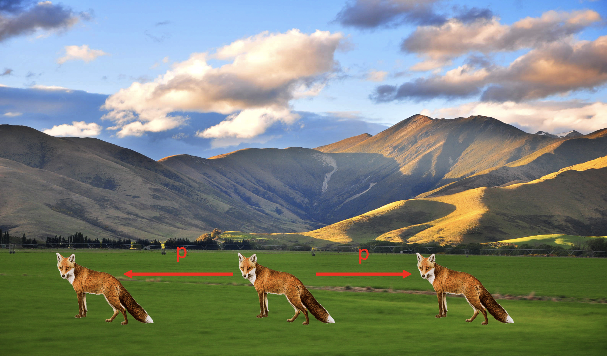
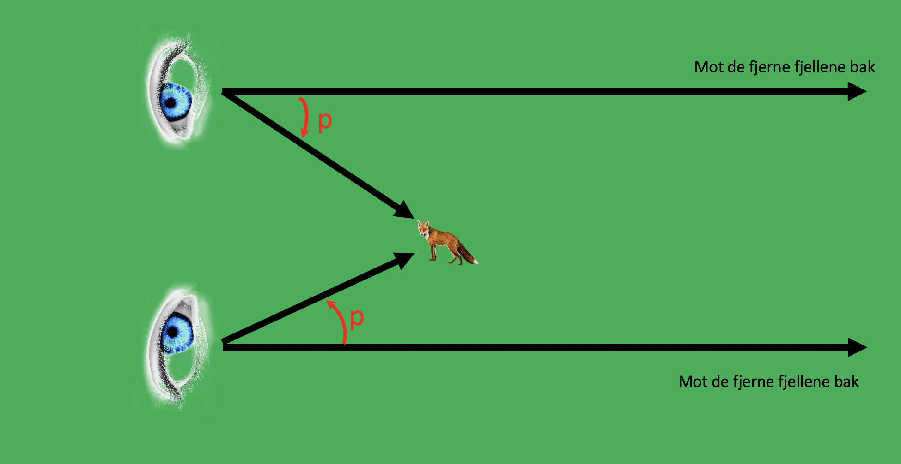

Forrige side🙂 🙁parallakse  Ser du det?? Hvis ikke, spør! Men hva tror du vinkelen p avhenger av? Hvordan kunne du fått denne vinkelen til å bli større eller mindre? Kansje du kan prøve deg frem med tommelen og se om du ser det? Neste side